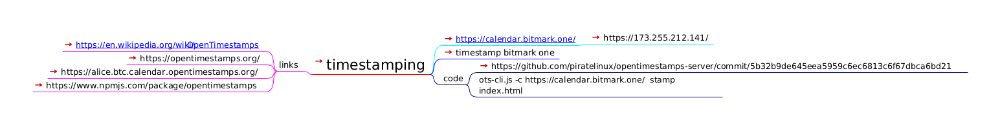

timestamping

timestamping
https://calendar.bitmark.one/
timestamp bitmark one
code
https://github.com/piratelinux/opentimestamps-server/commit/5b32b9de645eea5959c6ec6813c6f67dbca6bd21
ots-cli.js -c https://calendar.bitmark.one/ stamp index.html
links
https://en.wikipedia.org/wiki/
OpenTimestamps
https://opentimestamps.org/
https://alice.btc.calendar.opentimestamps.org/
https://www.npmjs.com/package/opentimestamps